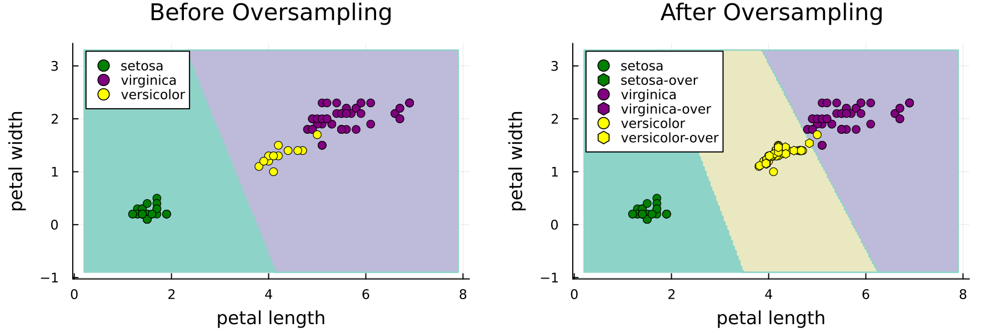
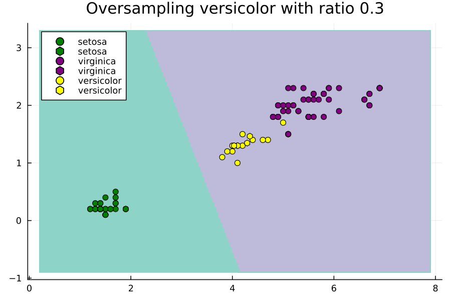

Effect of ratios Hyperparameter
using Random
using CSV
using DataFrames
using MLJ
using ScientificTypes
using Imbalance
using Plots, MeasuresLoading Data
Let's load the Iris dataset, the objective of this dataset is to predict the type of flower as one of "virginica", "versicolor" and "setosa" using its sepal and petal length and width.
We don't need to so from a CSV file this time because MLJ has a macro for loading it already! The only difference is that we will need to explictly convert it to a dataframe as MLJ loads it as a named tuple of vectors.
X, y = @load_iris
X = DataFrame(X)
first(X, 5) |> pretty┌──────────────┬─────────────┬──────────────┬─────────────┐
│ sepal_length │ sepal_width │ petal_length │ petal_width │
│ Float64 │ Float64 │ Float64 │ Float64 │
│ Continuous │ Continuous │ Continuous │ Continuous │
├──────────────┼─────────────┼──────────────┼─────────────┤
│ 5.1 │ 3.5 │ 1.4 │ 0.2 │
│ 4.9 │ 3.0 │ 1.4 │ 0.2 │
│ 4.7 │ 3.2 │ 1.3 │ 0.2 │
│ 4.6 │ 3.1 │ 1.5 │ 0.2 │
│ 5.0 │ 3.6 │ 1.4 │ 0.2 │
└──────────────┴─────────────┴──────────────┴─────────────┘Our purpose for this tutorial is primarily visuallization. Thus, let's select two of the continuous features only to work with. It's known that the sepal length and width play a much bigger role in classifying the type of flower so let's keep those only.
X = select(X, :petal_width, :petal_length)
first(X, 5) |> pretty┌─────────────┬──────────────┐
│ petal_width │ petal_length │
│ Float64 │ Float64 │
│ Continuous │ Continuous │
├─────────────┼──────────────┤
│ 0.2 │ 1.4 │
│ 0.2 │ 1.4 │
│ 0.2 │ 1.3 │
│ 0.2 │ 1.5 │
│ 0.2 │ 1.4 │
└─────────────┴──────────────┘Coercing Data
ScientificTypes.schema(X)┌──────────────┬────────────┬─────────┐
│ names │ scitypes │ types │
├──────────────┼────────────┼─────────┤
│ petal_width │ Continuous │ Float64 │
│ petal_length │ Continuous │ Float64 │
└──────────────┴────────────┴─────────┘Things look good, no coercion is needed.
Oversampling
Iris, by default has no imbalance problem
checkbalance(y)virginica: ▇▇▇▇▇▇▇▇▇▇▇▇▇▇▇▇▇▇▇▇▇▇▇▇▇▇▇▇▇▇▇▇▇▇▇▇▇▇▇▇▇▇▇▇▇▇▇▇▇▇ 50 (100.0%)
setosa: ▇▇▇▇▇▇▇▇▇▇▇▇▇▇▇▇▇▇▇▇▇▇▇▇▇▇▇▇▇▇▇▇▇▇▇▇▇▇▇▇▇▇▇▇▇▇▇▇▇▇ 50 (100.0%)
versicolor: ▇▇▇▇▇▇▇▇▇▇▇▇▇▇▇▇▇▇▇▇▇▇▇▇▇▇▇▇▇▇▇▇▇▇▇▇▇▇▇▇▇▇▇▇▇▇▇▇▇▇ 50 (100.0%)To simulate that there is a balance problem, we will consider a random sample of 100 observations. A random sample does not guarantee perserving the proportion of classes; in this, we actually set the seed to get a very unlikely random sample that suffers from moderate imbalance.
Random.seed!(803429)
subset_indices = rand(1:size(X, 1), 100)
X, y = X[subset_indices, :], y[subset_indices]
checkbalance(y) # comes from Imbalanceversicolor: ▇▇▇▇▇▇▇▇▇▇▇ 12 (22.6%)
setosa: ▇▇▇▇▇▇▇▇▇▇▇▇▇▇▇▇▇▇▇▇▇▇▇▇▇▇▇▇▇▇▇▇▇ 35 (66.0%)
virginica: ▇▇▇▇▇▇▇▇▇▇▇▇▇▇▇▇▇▇▇▇▇▇▇▇▇▇▇▇▇▇▇▇▇▇▇▇▇▇▇▇▇▇▇▇▇▇▇▇▇▇ 53 (100.0%)We will treat this as our training set going forward so we don't need to partition. Now let's oversample it with SMOTE.
Xover, yover = smote(X, y; k=5, ratios=Dict("versicolor" => 0.7), rng=42)
checkbalance(yover)setosa: ▇▇▇▇▇▇▇▇▇▇▇▇▇▇▇▇▇▇▇▇▇▇▇▇▇▇▇▇▇▇▇▇▇ 35 (66.0%)
versicolor: ▇▇▇▇▇▇▇▇▇▇▇▇▇▇▇▇▇▇▇▇▇▇▇▇▇▇▇▇▇▇▇▇▇▇▇ 37 (69.8%)
virginica: ▇▇▇▇▇▇▇▇▇▇▇▇▇▇▇▇▇▇▇▇▇▇▇▇▇▇▇▇▇▇▇▇▇▇▇▇▇▇▇▇▇▇▇▇▇▇▇▇▇▇ 53 (100.0%)Training the Model
models(matching(Xover, yover))53-element Vector{NamedTuple{(:name, :package_name, :is_supervised, :abstract_type, :deep_properties, :docstring, :fit_data_scitype, :human_name, :hyperparameter_ranges, :hyperparameter_types, :hyperparameters, :implemented_methods, :inverse_transform_scitype, :is_pure_julia, :is_wrapper, :iteration_parameter, :load_path, :package_license, :package_url, :package_uuid, :predict_scitype, :prediction_type, :reporting_operations, :reports_feature_importances, :supports_class_weights, :supports_online, :supports_training_losses, :supports_weights, :transform_scitype, :input_scitype, :target_scitype, :output_scitype)}}:
(name = AdaBoostClassifier, package_name = MLJScikitLearnInterface, ... )
(name = AdaBoostStumpClassifier, package_name = DecisionTree, ... )
(name = BaggingClassifier, package_name = MLJScikitLearnInterface, ... )
(name = BayesianLDA, package_name = MLJScikitLearnInterface, ... )
(name = BayesianLDA, package_name = MultivariateStats, ... )
(name = BayesianQDA, package_name = MLJScikitLearnInterface, ... )
(name = BayesianSubspaceLDA, package_name = MultivariateStats, ... )
(name = CatBoostClassifier, package_name = CatBoost, ... )
(name = ConstantClassifier, package_name = MLJModels, ... )
(name = DecisionTreeClassifier, package_name = BetaML, ... )
⋮
(name = SGDClassifier, package_name = MLJScikitLearnInterface, ... )
(name = SVC, package_name = LIBSVM, ... )
(name = SVMClassifier, package_name = MLJScikitLearnInterface, ... )
(name = SVMLinearClassifier, package_name = MLJScikitLearnInterface, ... )
(name = SVMNuClassifier, package_name = MLJScikitLearnInterface, ... )
(name = StableForestClassifier, package_name = SIRUS, ... )
(name = StableRulesClassifier, package_name = SIRUS, ... )
(name = SubspaceLDA, package_name = MultivariateStats, ... )
(name = XGBoostClassifier, package_name = XGBoost, ... )Let's go for an SVM
import Pkg;
Pkg.add("MLJLIBSVMInterface");Before Oversampling
# 1. Load the model
SVC = @load SVC pkg = LIBSVM
# 2. Instantiate it (γ=0.01 is intentional)
model = SVC(gamma=0.01)
# 3. Wrap it with the data in a machine
mach = machine(model, X, y)
# 4. fit the machine learning model
fit!(mach)┌ Info: For silent loading, specify `verbosity=0`.
└ @ Main /Users/essam/.julia/packages/MLJModels/EkXIe/src/loading.jl:159
import MLJLIBSVMInterface ✔
┌ Info: Training machine(SVC(kernel = RadialBasis, …), …).
└ @ MLJBase /Users/essam/.julia/packages/MLJBase/ByFwA/src/machines.jl:492
trained Machine; caches model-specific representations of data
model: SVC(kernel = RadialBasis, …)
args:
1: Source @527 ⏎ Table{AbstractVector{Continuous}}
2: Source @580 ⏎ AbstractVector{Multiclass{3}}After Oversampling
# 3. Wrap it with the data in a machine
mach_over = machine(model, Xover, yover)
# 4. fit the machine learning model
fit!(mach_over)┌ Info: Training machine(SVC(kernel = RadialBasis, …), …).
└ @ MLJBase /Users/essam/.julia/packages/MLJBase/ByFwA/src/machines.jl:492
trained Machine; caches model-specific representations of data
model: SVC(kernel = RadialBasis, …)
args:
1: Source @277 ⏎ Table{AbstractVector{Continuous}}
2: Source @977 ⏎ AbstractVector{Multiclass{3}}Plot Decision Boundaries
Construct ranges for each feature and consecutively a grid
petal_width_range =
range(minimum(X.petal_width) - 1, maximum(X.petal_width) + 1, length = 200)
petal_length_range =
range(minimum(X.petal_length) - 1, maximum(X.petal_length) + 1, length = 200)
grid_points = [(pw, pl) for pw in petal_width_range, pl in petal_length_range]200×200 Matrix{Tuple{Float64, Float64}}:
(-0.9, 0.2) (-0.9, 0.238693) … (-0.9, 7.9)
(-0.878894, 0.2) (-0.878894, 0.238693) (-0.878894, 7.9)
(-0.857789, 0.2) (-0.857789, 0.238693) (-0.857789, 7.9)
(-0.836683, 0.2) (-0.836683, 0.238693) (-0.836683, 7.9)
(-0.815578, 0.2) (-0.815578, 0.238693) (-0.815578, 7.9)
(-0.794472, 0.2) (-0.794472, 0.238693) … (-0.794472, 7.9)
(-0.773367, 0.2) (-0.773367, 0.238693) (-0.773367, 7.9)
(-0.752261, 0.2) (-0.752261, 0.238693) (-0.752261, 7.9)
(-0.731156, 0.2) (-0.731156, 0.238693) (-0.731156, 7.9)
(-0.71005, 0.2) (-0.71005, 0.238693) (-0.71005, 7.9)
⋮ ⋱
(3.13116, 0.2) (3.13116, 0.238693) (3.13116, 7.9)
(3.15226, 0.2) (3.15226, 0.238693) (3.15226, 7.9)
(3.17337, 0.2) (3.17337, 0.238693) (3.17337, 7.9)
(3.19447, 0.2) (3.19447, 0.238693) (3.19447, 7.9)
(3.21558, 0.2) (3.21558, 0.238693) … (3.21558, 7.9)
(3.23668, 0.2) (3.23668, 0.238693) (3.23668, 7.9)
(3.25779, 0.2) (3.25779, 0.238693) (3.25779, 7.9)
(3.27889, 0.2) (3.27889, 0.238693) (3.27889, 7.9)
(3.3, 0.2) (3.3, 0.238693) (3.3, 7.9)Evaluate the grid with the machine before and after oversampling
grid_predictions =[
predict(mach, Tables.table(reshape(collect(point), 1, 2)))[1] for
point in grid_points
]
grid_predictions_over = [
predict(mach_over, Tables.table(reshape(collect(point), 1, 2)))[1] for
point in grid_points
]200×200 CategoricalArrays.CategoricalArray{String,2,UInt32}:
"setosa" "setosa" "setosa" "setosa" … "virginica" "virginica"
"setosa" "setosa" "setosa" "setosa" "virginica" "virginica"
"setosa" "setosa" "setosa" "setosa" "virginica" "virginica"
"setosa" "setosa" "setosa" "setosa" "virginica" "virginica"
"setosa" "setosa" "setosa" "setosa" "virginica" "virginica"
"setosa" "setosa" "setosa" "setosa" … "virginica" "virginica"
"setosa" "setosa" "setosa" "setosa" "virginica" "virginica"
"setosa" "setosa" "setosa" "setosa" "virginica" "virginica"
"setosa" "setosa" "setosa" "setosa" "virginica" "virginica"
"setosa" "setosa" "setosa" "setosa" "virginica" "virginica"
⋮ ⋱
"setosa" "setosa" "setosa" "setosa" "virginica" "virginica"
"setosa" "setosa" "setosa" "setosa" "virginica" "virginica"
"setosa" "setosa" "setosa" "setosa" "virginica" "virginica"
"setosa" "setosa" "setosa" "setosa" "virginica" "virginica"
"setosa" "setosa" "setosa" "setosa" … "virginica" "virginica"
"setosa" "setosa" "setosa" "setosa" "virginica" "virginica"
"setosa" "setosa" "setosa" "setosa" "virginica" "virginica"
"setosa" "setosa" "setosa" "setosa" "virginica" "virginica"
"setosa" "setosa" "setosa" "setosa" "virginica" "virginica"Make two contour plots using the grid predictions before and after oversampling
p = contourf(petal_length_range, petal_width_range, grid_predictions,
levels=3, color=:Set3_3, colorbar=false)
p_over = contourf(petal_length_range, petal_width_range, grid_predictions_over,
levels=3, color=:Set3_3, colorbar=false)
println()Scatter plot the data before and after oversampling
old_count = size(X, 1)
colors = Dict("setosa" => "green", "versicolor" => "yellow",
"virginica" => "purple")
labels = unique(y)
for label in labels
scatter!(p, X.petal_length[y.==label], X.petal_width[y.==label],
color = colors[label], label = label,
title = "Before Oversampling")
scatter!(p_over, X.petal_length[y.==label], X.petal_width[y.==label],
color = colors[label], label = label,
title = "After Oversampling")
# find new points only and plot with different shape
scatter!(p_over, Xover.petal_length[old_count+1:end][yover[old_count+1:end].==label],
Xover.petal_width[old_count+1:end][yover[old_count+1:end].==label],
color = colors[label], label = label*"-over", markershape = :hexagon,
title = "After Oversampling")
end
plot_res = plot(p, p_over, layout = (1, 2), xlabel = "petal length",
ylabel = "petal width", size = (900, 300), margin = 5mm, dpi = 200)
savefig(plot_res, "./assets/before-after-smote.png")
println()
Notice how the minority class was completely ignore prior to oversampling. Not all models and hyperparameter settings are this delicate to class imbalance.
Effect of Ratios Hyperparameter
Now let's study the effect of the ratios hyperparameter. We will do this through an animated plot.
anim = @animate for versicolor_ratio ∈ 0.3:0.01:2
# oversample
Xover, yover =
smote(X, y; k = 5, ratios = Dict("versicolor" => versicolor_ratio), rng = 42)
# fit machine
model = SVC(gamma = 0.01)
mach_over = machine(model, Xover, yover)
fit!(mach_over, verbosity = 0)
# grid predictions
grid_predictions_over = [
predict(mach_over, Tables.table(reshape(collect(point), 1, 2)))[1] for
point in grid_points
]
# plot
p_over = contourf(petal_length_range, petal_width_range, grid_predictions_over,
levels = 3, color = :Set3_3, colorbar = false)
old_count = size(X, 1)
for label in labels
scatter!(p_over, X.petal_length[y.==label], X.petal_width[y.==label],
color = colors[label], label = label,
title = "Oversampling versicolor with ratio $versicolor_ratio")
# find new points only and plot with different shape
scatter!(p_over,
Xover.petal_length[old_count+1:end][yover[old_count+1:end].==label],
Xover.petal_width[old_count+1:end][yover[old_count+1:end].==label],
color = colors[label], label = label * "-over", markershape = :hexagon,
title = "Oversampling versicolor with ratio $versicolor_ratio")
end
plot!(dpi = 150)
end
gif(anim, "./assets/smote-animation.gif", fps=6)
println()
Notice how setting ratios greedily can lead to overfitting.